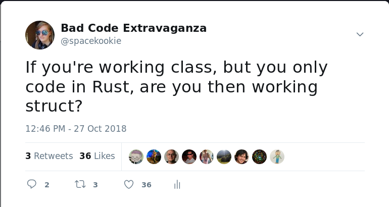
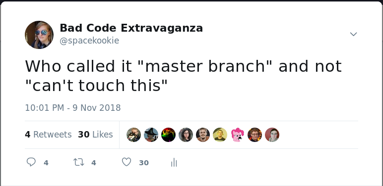
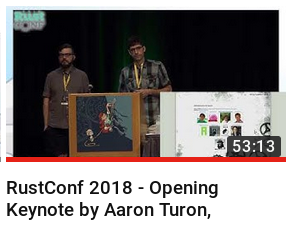
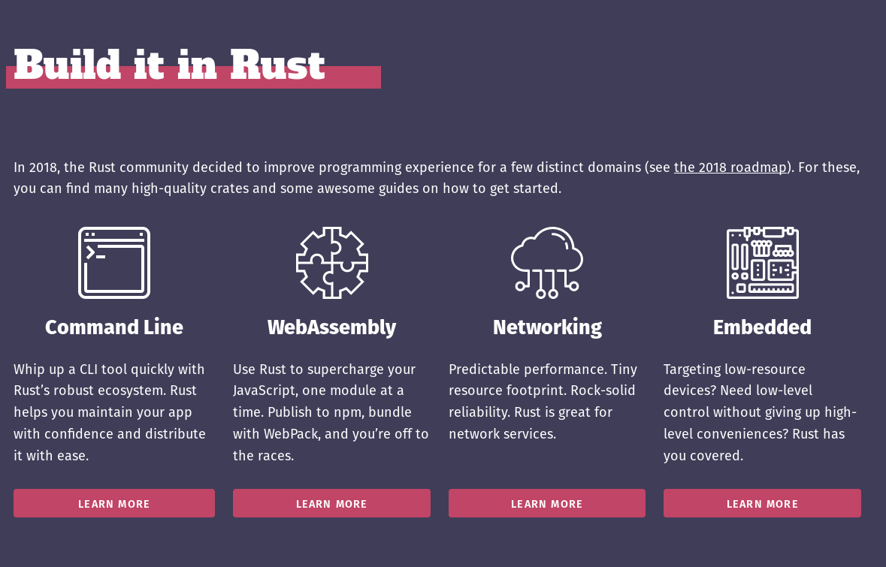
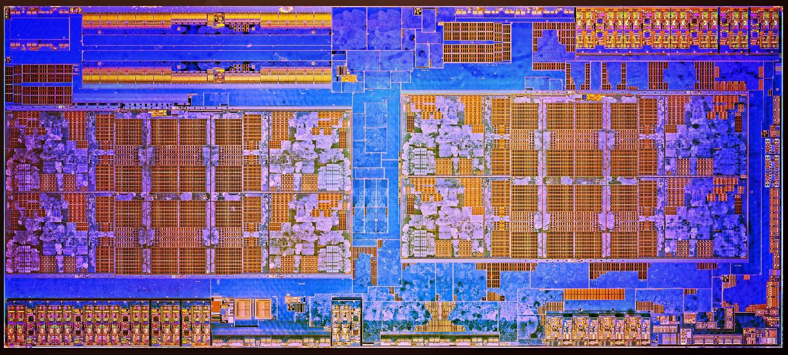
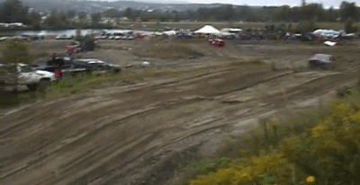
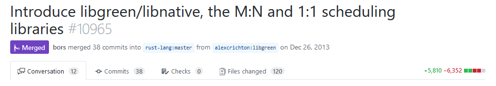
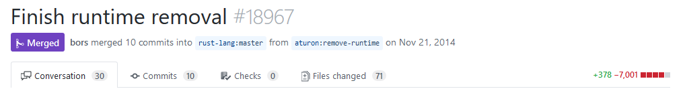
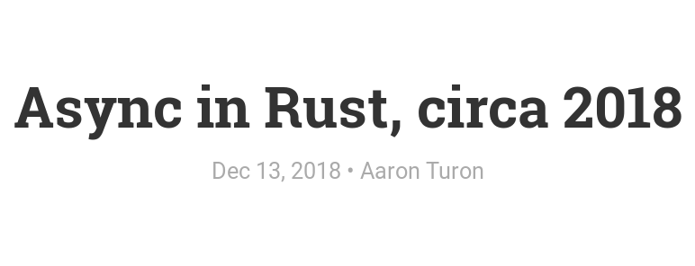
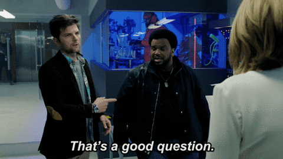

An async story
Привет RustRush 👋
$ whoami
Katharina Fey
@spacekookie
Software Engineer at Ferrous Systems
How to complain at me
kookie@spacekookie.de
@spacekookie on twitter
I make some attrocious puns


An async story
An async story
Rust is successful
How do you define success?
Rust is a young language
- Development started in 2010
- Stable since 2015
Rust communities are young
Yet, we have seen some amazing work from them
Lots of companies are adopting Rust
Finding Rust jobs is easier as ever
Momentum
Every 6 weeks a new Rust.
Contribution pipeline is short
[Rust] is fundamentally about empowerment: no matter what kind of code you are writing now, Rust empowers you to reach farther, to program with confidence in a wider variety of domains than you did before.
– Rust book, foreword
Is the Rust community unique?
No
What is unique is how the language and tooling support the community in ways that other language ecosystems do not!
Rust is going places
- Networking services
- Embedded
- Browser front-ends
- General applications
- Games
- Spaaaaaaaaaaaaaace!

A community of developers empowered by their tools and each other
In my opinion: momentum is success
Bringing new people to new domains
People who are curious and adventerous.
Supported by their tools and the community,
who are encouraged to build exciting things!
This isn’t easy!
This isn’t perfect!

- Problems scaling the descision process.
- Problems bringing in new people
Rust 2018
Who here doesn’t know what Rust 2018 is?
Rust 2018
- Accumulation of changes since 2015
- Backwards compatible with Rust 2015, while still having some breaking changes
- Focus on developer ergonomics and productivity
This is done via the edition flag
[package]
name = "foobar"
version = "1.0.0"
edition = "2018"2015 is default to preserve backwards compatibility
The working groups
- Commandline Applications
- Embedded
- WASM
- Networking
The idea
The goal of these groups is to focus on the end-to-end user experience of using Rust in each domain.
– Announcing the 2018 Domain Working Groups
The Governance
- Group leaders were assigned at first
- People joined through collaboration
- The longer time went on, the less hirarchical the group structures became
This meant a low barrier-to-entry for newcomers

[…] focusing on the end-to-end experience for both sync and async networking code
What is async I/O
Using available resources the most efficiently…

Doing things while waiting for long-running operations to finish…

Look mum, no threads!

Why?

Futures

Future = calculation that hasn’t happened yet
- Is probably gonna happen at some point
- Just keep asking
Event Loop = runtime for Futures
- Keeps polling
Futureuntil it is ready - Runs your code whenever it can be run
This is a talk about Rust
It’s state machines all the way down
Let’s talk about some history
Late 2013
libgreen

- Rust had green threading support
- Enabled non-blocking IO
Included a runtime in stdlib
- This came with a lot of problems
Rust wanted to go in a different direction
Late 2014
libgreen is dead, long live libgreen

mio-rs
“Metal I/O” 🤘
- Light, non-blocking IO library
- Abstracts async over different platforms
- Eventually developed an ecosystem around it
Mid 2016

- zero cost abstraction for futures
- Building async state-machines
tokio-core
- Wraps around
mio.rsandfutures.rs - Event reactor
Fast foward to 2018
So what’s the problem?
async & await
Write code that looks synchronous/ blocking.
It actually does async under the hood!
The Future trait
The Future trait
enum Poll<T> {
Ready(T),
Pending
}
trait Future {
type Output;
fn poll(self: Pin<&mut Self>, lw: &LocalWaker)
-> Poll<Self::Output>;
}Now provided by libcore/ libstd
New keywords for everybody
async- marks a function as … asyncawait- waits for something async to happen
romio
A minimal tokio fork that uses async/await
async fn say_hello(mut s: TcpStream) { /* ... */ }
async fn listen() -> Result<(), ::std::io::Error> {
let socket_addr = "127.0.0.1:80".parse()?;
let mut listener = TcpListener::bind(&socket_addr)?;
let mut incoming = listener.incoming();
// accept connections and process them serially
while let Some(stream) = await!(incoming.next()) {
await!(say_hello(stream?));
}
Ok(())
}Can I use this?
Yes!
(on nightly)
- RFC for async/await syntax
Futuretrait now inlibcore/libstdfutures-rsupdated to the new APIs
Networking WG
Writing networking code has many problem domains
- Pure async/await implementation
- “I just want to write a web-app”
- Low-level embedded networking
Working group mitosis
- net-async-wg
- net-web-wg
- net-embedded-wg
Recap

- Open RFC to stabilise
Futuretrait - Working on the ecosystem & libraries
Why “an async story” ?
Kate, what hell was your point?

Rust is the async story!
async in Rust 2018 is still WIP.
But it’s on a good track,
because it’s the community that’s driving development!
Who makes Rust?
All of you! All of us!
And the language is better off because of it.
If you can remember one thing from this talk?
Collaboration takes time.
But the result will be amazing!
thank you